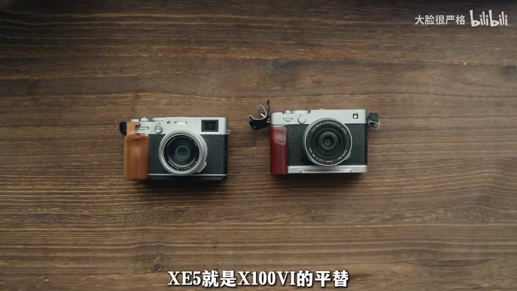
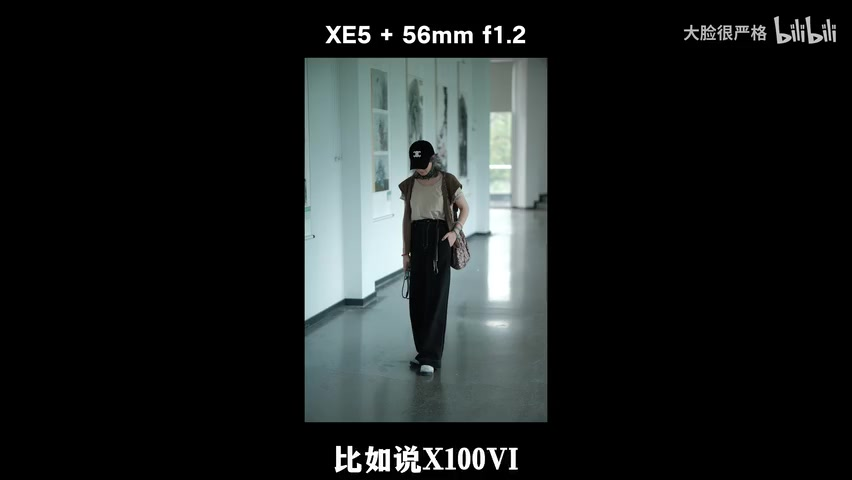
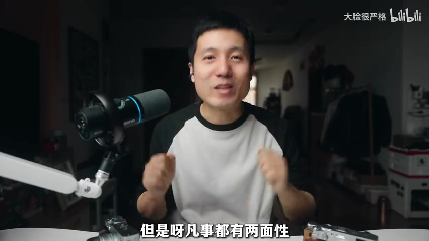
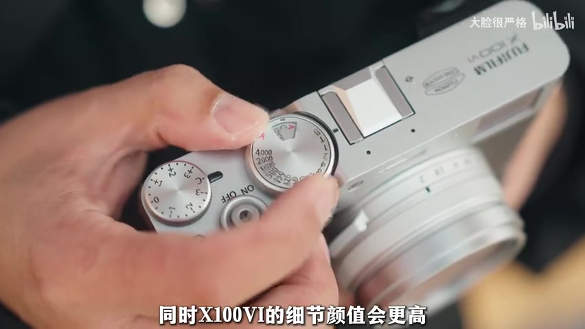
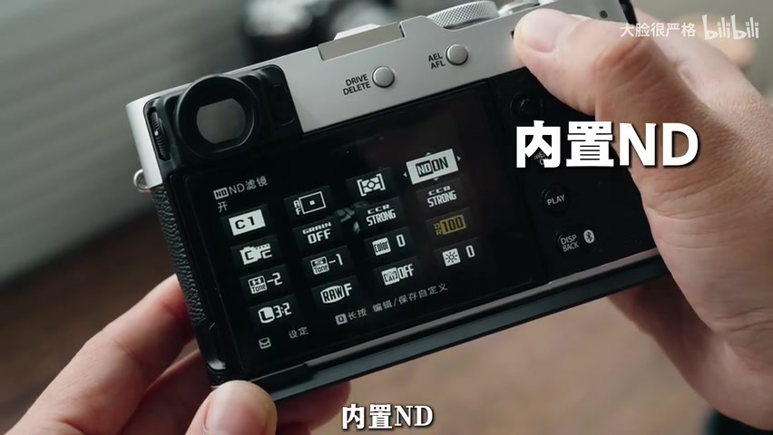
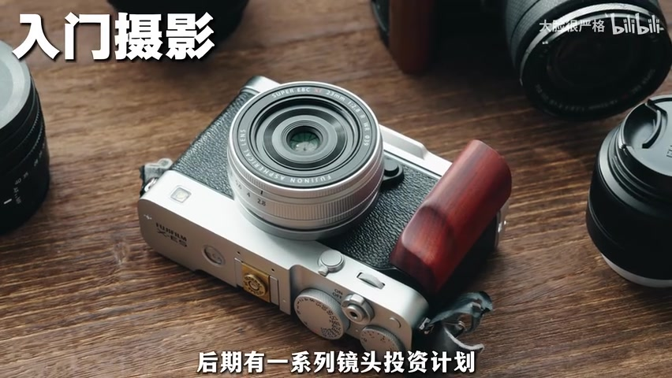

00:00—00:26 · 问题登场
一边难买，一边看起来几乎一样
视频先把 X100VI 摆在“富士精神旗舰”的位置上。它上市后仍然难买，而后来出现的 XE5 配上 23mm F2.8 饼干镜头，外形、大小、视角与核心拍摄体验看上去都十分接近。再碰上 XE5 价格回落，一个自然的问题便冒了出来：它是不是 X100VI 的平替？

转录说明：Whisper 在原始分段中多次把“XE5”识别为“X15/X150”，把“X100VI”识别为“X160”。正文依据视频标题与画面校正机型名；页面末尾仍逐段保留原始识别结果，未静默改写。
00:30—01:44 · 从新手视角判断
XE5 的关键不是“像”，而是能换镜头
UP 主先把答案限定在“第一次接触摄影的新手”这个人群里：对他们而言，XE5 不只是平替，甚至可能更合适。视频的理由很具体——在体积、画质和性能接近的前提下，XE5 多了一条扩展路径：镜头可以更换。
23mm 视角对新手未必轻松：范围偏广、虚化有限，构图还没形成习惯时，画面容易显得散。如果固定镜头用不惯，X100VI 的调整空间很小；XE5 则可以换成变焦镜头，或换一支更适合人像虚化的镜头，再慢慢找到自己的拍摄偏好。

视频也提到机内裁切，但把它视为有限补救：裁切会牺牲画质，也不会凭空增加虚化，而且 XE5 同样具备裁切能力。于是这一段的结论落在“更低的上手门槛、更高的成长上限”上。
01:44—02:41 · 事情的另一面
不能换镜头，恰好也是 X100VI 的魅力

视频把更适合 X100VI 的人分成两类：已经决定“一机一镜”、只想轻松记录的人，以及对外观和一体感格外在意的人。固定镜头让机身更紧凑，也省去了出门前反复挑镜头、挑焦段的犹豫。
UP 主拿自己的器材选择做例子：家里有多台相机和许多镜头时，出门前反而容易想太久；拿起 X100VI，就接受眼前这个焦段，“拍到啥就是啥”，不再让器材选择打断出行。
按画面校正机型名后，UP 主的概括是：XE5 更像“入门摄影的系统模块”，X100VI 更像“重生活、轻摄影的体验方式”。
02:41—03:15 · 细节拉开差异
外观一体感之外，还有几项独有功能
镜头与机身一体化，让 X100VI 的比例、线条与复古细节更完整。视频承认 XE5 配 23mm F2.8 已经很好看，但如果把两台机器放在一起细看，X100VI 更能满足对精致感要求较高的玩家。

接着，UP 主列出 X100VI 的几项功能差异：内置 ND 便于轻便手持视频拍摄；镜间快门可配合更高快门速度使用闪光灯；机身自带闪光灯，既能应急补光，也能做直闪创作。对于已有成熟可换镜头系统的人，这些特点让它很适合作为随身备机。

03:15—03:52 · 回到购买决定
不是谁替代谁，而是你想把摄影放在生活的什么位置

视频更推荐 XE5，如果你……
- 准备认真入门摄影
- 之后有镜头投资计划
- 想尝试更多焦段与画面风格
- 还不确定 23mm 是否适合自己
视频更推荐 X100VI，如果你……
- 只想随身记录生活
- 不想研究和选择许多镜头
- 更重视外观、细节与一体感
- 已有相机系统，想添一台特色备机
视频最后还留下一句很生活化的判断：如果真正想要的是 X100VI 的样子与体验，即使先买了 XE5 加饼干镜头，心里可能仍会惦记那台 X100VI。所谓“平替”因此不能只看参数相近，还要看它能不能替代你真正想要的使用方式。